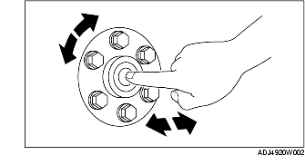

CONTROL COJINETE GUIA
B3E051011501W01
1. Sin quitar el cojinete guía, girar el cojinete mientras se aplica fuerza en dirección axial.
• En caso de funcionamiento incorrecto, sustituir el cojinete guía.
